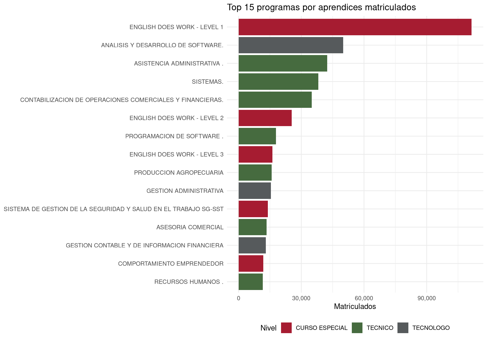
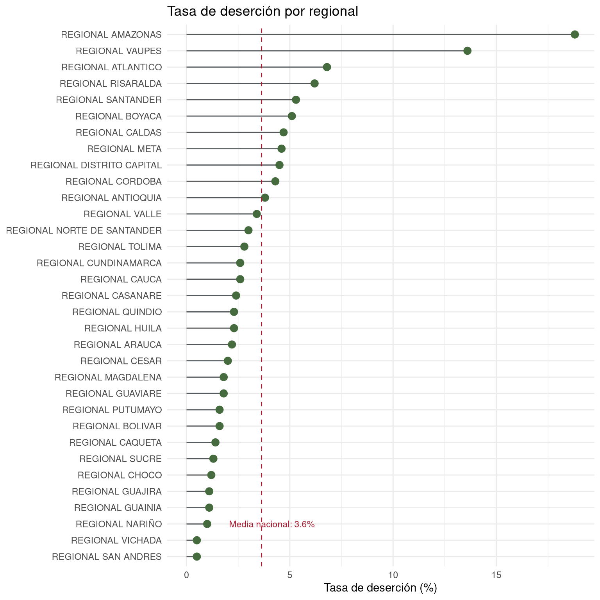

library(readr)
library(dplyr)
library(lubridate)
library(ggplot2)
library(tidymodels)
desercion <- read_csv("../data/sena_limpio.csv")Análisis de la Oferta Formativa del SENA
Introducción
Este reporte analiza la oferta de formación profesional del Servicio Nacional de Aprendizaje (SENA) a partir de datos abiertos publicados en datos.gov.co. El dataset contiene 42,080 fichas de formación con 1,447,204 aprendices matriculados, distribuidos en 33 regionales, 110 centros y 2,153 programas.
El análisis se organiza en tres secciones: estadísticas descriptivas de la oferta, visualizaciones de los patrones principales, y un modelo predictivo de deserción con tidymodels.
Oferta formativa
cat("Total de fichas:", nrow(desercion), "\n")Total de fichas: 42080 cat("Total de aprendices matriculados:", sum(desercion$TOTAL_APRENDICES_MATRICULADOS), "\n")Total de aprendices matriculados: 1447204 cat("Programas únicos:", length(unique(desercion$NOMBRE_PROGRAMA_FORMACION)), "\n")Programas únicos: 2153 cat("Centros:", length(unique(desercion$NOMBRE_CENTRO)), "\n")Centros: 110 cat("Regionales:", length(unique(desercion$NOMBRE_REGIONAL)), "\n")Regionales: 33 La oferta del SENA se concentra fuertemente en tres niveles de formación. Curso Especial domina con más de 700,000 matriculados, seguido de Técnico y Tecnólogo:
desercion |>
group_by(NIVEL_FORMACION) |>
summarise(matriculados = sum(TOTAL_APRENDICES_MATRICULADOS)) |>
arrange(desc(matriculados))# A tibble: 7 × 2
NIVEL_FORMACION matriculados
<chr> <dbl>
1 CURSO ESPECIAL 719128
2 TECNICO 439782
3 TECNOLOGO 269099
4 OPERARIO 9069
5 EVENTO 6926
6 AUXILIAR 2919
7 PROFUNDIZACION TECNICA 281La modalidad presencial representa el 55.9% de la matrícula, pero la virtual no está lejos con 43.8%:
desercion |>
group_by(MODALIDAD_FORMACION) |>
summarise(
matriculados = sum(TOTAL_APRENDICES_MATRICULADOS),
porcentaje = round(matriculados / sum(desercion$TOTAL_APRENDICES_MATRICULADOS) * 100, 1)
) |>
arrange(desc(matriculados))# A tibble: 3 × 3
MODALIDAD_FORMACION matriculados porcentaje
<chr> <dbl> <dbl>
1 PRESENCIAL 808874 55.9
2 VIRTUAL 634378 43.8
3 A DISTANCIA 3952 0.3Deserción
La tasa global de deserción es del 3.6%, pero el hallazgo más relevante es la diferencia por modalidad: la modalidad virtual deserta 4 veces más que la presencial (6.2% vs 1.6%):
desercion |>
group_by(MODALIDAD_FORMACION) |>
summarise(
matriculados = sum(TOTAL_APRENDICES_MATRICULADOS),
desertores = sum(DESERTORES_AÑO_ACTUAL),
tasa = round(desertores / matriculados * 100, 1)
) |>
arrange(desc(tasa))# A tibble: 3 × 4
MODALIDAD_FORMACION matriculados desertores tasa
<chr> <dbl> <dbl> <dbl>
1 VIRTUAL 634378 39556 6.2
2 A DISTANCIA 3952 95 2.4
3 PRESENCIAL 808874 12928 1.6Visualizaciones
Programas con mayor matrícula
top_programas <- desercion |>
group_by(NOMBRE_PROGRAMA_FORMACION, NIVEL_FORMACION) |>
summarise(matriculados = sum(TOTAL_APRENDICES_MATRICULADOS), .groups = "drop") |>
arrange(desc(matriculados)) |>
head(15)
ggplot(top_programas, aes(x = reorder(NOMBRE_PROGRAMA_FORMACION, matriculados),
y = matriculados, fill = NIVEL_FORMACION)) +
geom_col() + coord_flip() +
scale_fill_manual(values = c("TECNICO" = "#466B3F", "TECNOLOGO" = "#565A5C", "CURSO ESPECIAL" = "#A61C31")) +
scale_y_continuous(labels = scales::comma) +
labs(title = "Top 15 programas por aprendices matriculados", x = NULL, y = "Matriculados", fill = "Nivel") +
theme_minimal() + theme(legend.position = "bottom")
English Does Work Level 1 domina con más de 111,000 matriculados. Los programas de tecnología (Análisis y Desarrollo de Software, Sistemas) y administrativos (Asistencia Administrativa, Contabilización) completan los primeros puestos.
Deserción por regional
regionales <- desercion |>
group_by(NOMBRE_REGIONAL) |>
summarise(
matriculados = sum(TOTAL_APRENDICES_MATRICULADOS),
tasa = round(sum(DESERTORES_AÑO_ACTUAL) / matriculados * 100, 1),
.groups = "drop"
)
tasa_global <- sum(desercion$DESERTORES_AÑO_ACTUAL) / sum(desercion$TOTAL_APRENDICES_MATRICULADOS) * 100
ggplot(regionales, aes(x = reorder(NOMBRE_REGIONAL, tasa), y = tasa)) +
geom_segment(aes(xend = NOMBRE_REGIONAL, y = 0, yend = tasa), color = "#565A5C") +
geom_point(size = 3, color = "#466B3F") +
geom_hline(yintercept = tasa_global, linetype = "dashed", color = "#A61C31") +
annotate("text", x = 3, y = tasa_global + 0.5, label = paste0("Media nacional: ", round(tasa_global, 1), "%"),
color = "#A61C31", size = 3) +
coord_flip() +
labs(title = "Tasa de deserción por regional", x = NULL, y = "Tasa de deserción (%)") +
theme_minimal()
Regional Amazonas (18.8%) y Regional Vaupés (13.6%) están muy por encima del promedio nacional de 3.6%. La mayoría de las regionales se concentra entre 1% y 5%.
Modelo predictivo de deserción
¿Es posible predecir si una ficha tendrá desertores a partir de sus características? Se entrena un clasificador binario con tidymodels usando la variable tiene_desercion (TRUE/FALSE) como objetivo. El 75.7% de las fichas tiene cero desertores y el 24.3% tiene al menos uno.
desercion$tiene_desercion <- factor(desercion$tiene_desercion, levels = c(TRUE, FALSE), labels = c("SI", "NO"))
set.seed(123)
split <- initial_split(desercion, prop = 0.75, strata = tiene_desercion)
train <- training(split)
test <- testing(split)
cat("Entrenamiento:", nrow(train), "filas\n")Entrenamiento: 31560 filascat("Prueba:", nrow(test), "filas\n")Prueba: 10520 filasSe preparan las features con una receta que convierte las variables categóricas a dummies y normaliza las numéricas:
receta <- recipe(tiene_desercion ~ NIVEL_FORMACION + MODALIDAD_FORMACION + NOMBRE_REGIONAL + duracion_meses + TOTAL_APRENDICES_MATRICULADOS, data = train) |>
step_dummy(all_nominal_predictors()) |>
step_normalize(all_numeric_predictors())
receta── Recipe ──────────────────────────────────────────────────────────────────────── Inputs Number of variables by roleoutcome: 1
predictor: 5── Operations • Dummy variables from: all_nominal_predictors()• Centering and scaling for: all_numeric_predictors()Se define el modelo (regresión logística) y se ensambla el workflow:
modelo <- logistic_reg() |>
set_engine("glm")
wf <- workflow() |>
add_recipe(receta) |>
add_model(modelo)
wf══ Workflow ════════════════════════════════════════════════════════════════════
Preprocessor: Recipe
Model: logistic_reg()
── Preprocessor ────────────────────────────────────────────────────────────────
2 Recipe Steps
• step_dummy()
• step_normalize()
── Model ───────────────────────────────────────────────────────────────────────
Logistic Regression Model Specification (classification)
Computational engine: glm Se entrena y se evalúa sobre el conjunto de prueba:
ajuste <- fit(wf, data = train)
predicciones <- augment(ajuste, new_data = test)
predicciones |>
metrics(truth = tiene_desercion, estimate = .pred_class)# A tibble: 2 × 3
.metric .estimator .estimate
<chr> <chr> <dbl>
1 accuracy binary 0.810
2 kap binary 0.419predicciones |>
roc_auc(truth = tiene_desercion, .pred_SI)# A tibble: 1 × 3
.metric .estimator .estimate
<chr> <chr> <dbl>
1 roc_auc binary 0.787predicciones |>
conf_mat(truth = tiene_desercion, estimate = .pred_class) Truth
Prediction SI NO
SI 1138 578
NO 1419 7385Interpretación del modelo
El modelo alcanza un accuracy del 81% y un ROC AUC de 0.787. La matriz de confusión revela que el modelo es conservador: identifica correctamente el 92.7% de las fichas sin deserción (specificity), pero solo detecta el 44.5% de las fichas que sí tienen deserción (sensitivity). Esto significa que el modelo es bueno diciendo “esta ficha no tendrá desertores”, pero se le escapa más de la mitad de los casos de deserción real.
Este comportamiento es esperable: el 75.7% de las fichas no tiene deserción, así que un modelo que simplemente dijera “no” a todo tendría 75.7% de accuracy. El modelo mejora eso en 5 puntos (81%), lo que indica que las variables sí tienen poder predictivo, pero no suficiente para capturar todos los casos de deserción.
Las variables usadas (nivel de formación, modalidad, regional, duración y total de matriculados) capturan patrones generales — como que la modalidad virtual y los Cursos Especiales tienen mayor deserción — pero no capturan factores individuales (motivación del aprendiz, situación económica, calidad del instructor) que probablemente explican gran parte de la variabilidad.
Conclusiones
El análisis de la oferta formativa del SENA revela tres hallazgos principales:
Concentración de la oferta: Curso Especial domina la matrícula (49.7%), y un solo programa (English Does Work Level 1) tiene más matriculados que los tres siguientes combinados. Las regionales de Distrito Capital y Antioquia concentran el 24.5% de toda la oferta.
La brecha virtual-presencial en deserción: la modalidad virtual tiene una tasa de deserción 4 veces mayor que la presencial (6.2% vs 1.6%). Este es el hallazgo más accionable del análisis: sugiere que la formación virtual requiere estrategias de retención diferentes a la presencial.
Disparidad geográfica: la tasa de deserción varía de 0.5% (San Andrés) a 18.8% (Amazonas), un rango de 37 veces. Factores locales como conectividad, infraestructura y oferta laboral probablemente inciden en estas diferencias.